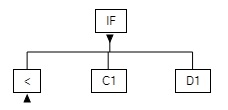

The Tree View
Abbreviating a Formula
Formula Forge lets users suppress or reveal detail in a formula by
collapsing or expanding elements in the tree view. It automatically
synchronizes the text and math views with the tree view, replacing
collapsed elements in those views with ellipses (...) or
their values.
Collapsed view of a formula
To collapse or expand an element in the tree view, click the triangular icon just beneath it. The presence of this icon distinguishes a collapsed element from a primitive element (that is, from a constant or a reference).
 Expanded element
Expanded element

Collapsed element
A setting in the Formula Forge menu governs how the text and math views display collapsed elements, which can be replaced either by ellipses (...) or by their values.